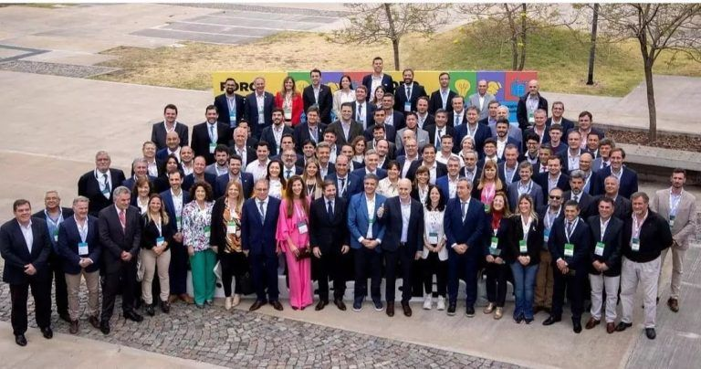
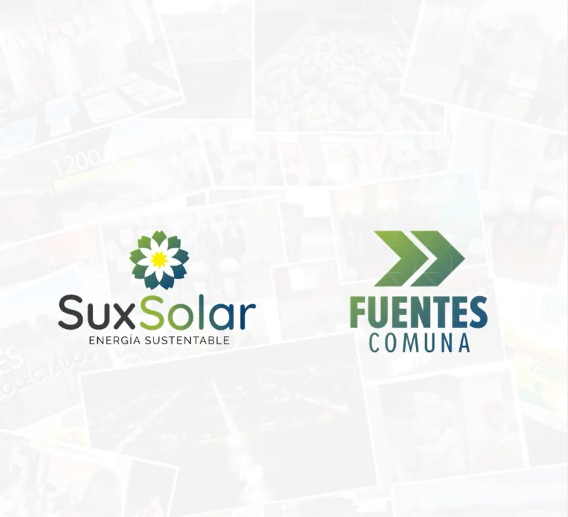
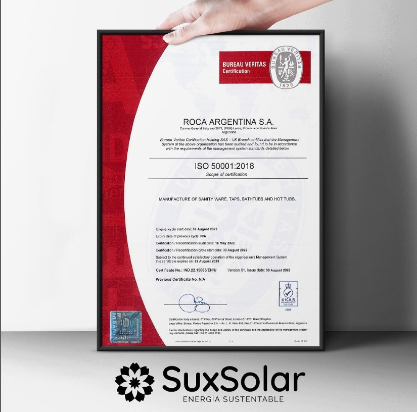

Inicio
Blog
Casos de éxito
Contactanos
Servicios
Firma Convenio Rus
Sux Solar firmó un convenio de trabajo con Río Uruguay Seguros para el desarrollo de proyectos inmobiliarios sustentables y para el cálculo de huella de carbono del ecosistema RUS

C4O Totoras
La ciudad fue invitada a participar de la Cumbre de Alcaldes - C40 que se desarrolló en
1° Carrera Sustentable del Tc
ENTREGA CERTIFICADO BUENAS PRACTICAS:
El Plan de Gestión Ambiental en el desarrollo inmobiliario Buena Vista Work fue reconocido por la Municipalidad de Rosario.

PLAN DE GESTIÓN FUENTES:
A partir del desarrollo e implementación de un Plan de Gestión Ambiental la localidad de Fuentes fue invitada a comentar su experiencia en el Foro Internacional de Ciudades Sostenibles realizado en Brasil

CERTIFICACIÓN ISO 50.001 - ROCA ARGENTINA
Sux Solar fue la responsable de ejecutar el Diagnóstico Energético y acompañara a Roca Argentina en la certificación de la ISO 50.001 - Eficiencia Energética
2º Carrera Sustentable del TC 2023
Recitales Sustentables Abel Pintos y Joan Manuel Serrat